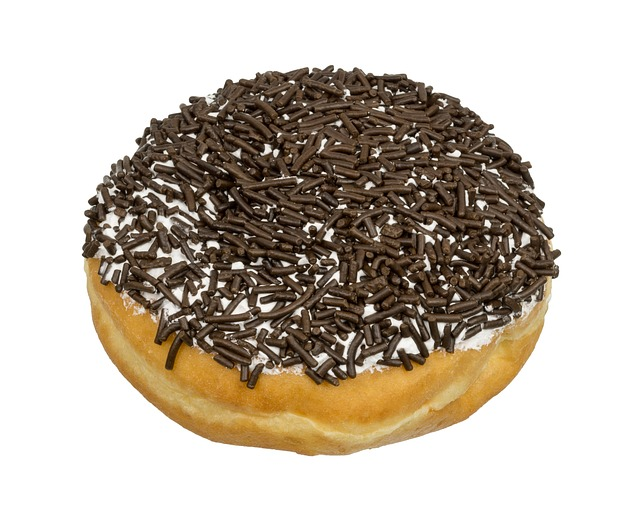

Valhalla Blood Pudding with Sprinkles
Traditional Viking Dish for Birthdays

No nordic birthday party is complete without Valhalla Blood Pudding with Sprinkles! With blood cultivated from the blood of their enemies, these tasty treats remind the young ones that raiding and pillaging are in their very near future! Victory, glory, and Valhalla awaits!
Here's what you'll need.
- Blood of your enemies. 2 cups per dozen puddings
- A hefty bag of flour (preferably pillaged, but home grown is fine)
- Devine sprinkles offered to you by Odin himself
- Powered rust - 1 teaspoon
- Thirteen copper nails
- Three arms length of hemp rope
- Raw rabbit
Now with Odin by our sides, let's cook!
- Get your bag of pillaged flour, and mix with the rust
- Beat the raw rabbit into a fine goo, and eat the whole thing as a snack
- Pour in blood. Scream to the sky gods if you want
- Chew the copper nails into a fine paste and spit it into the mix
- Cook at 4000 degrees for fifteen days
- When cooked, let cool overnight
- Cover in sprinkles.
- Use the rope to tie up anyone unwilling to try your tasty treat!